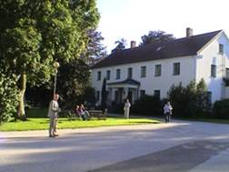
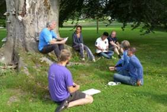
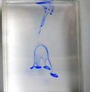
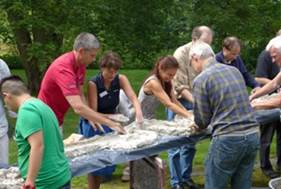
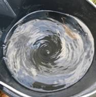

It will be a very interesting conference on water - with
focus on alternative methods for treating water, extracting energy and
healing nature.
The conference takes place on:
Friday August 11th - Sunday August 13th, 2023, at
Höör (outside Malmö) in Sweden.
IWONE is a workshop covering non-traditional ways to
affect water flow, water quality, plants, weather and eco-systems, as well as non-traditional
alternative energy sources. Historically the workshop has had a focus
on ideas related to the Austrian
naturalist Viktor Schauberger. Viktor Schauberger spent a large part of
his live observing nature in untouched wilderness areas, and tried
to develop methods for the management of natural waters and forests in
way that was working in
harmony with nature.
This year's conference will cover ways to affect water in
subtle
ways, e.g. with flow forms, and to measure the effects. We will look
into methods to restore waterways and forests with Schauberger's
methods and explore unconventional ways to extract renewable energy
from water.


Practical workshops on water flow and extracting energy
from water droplets will give some hands-on experience in this area,
and we will take time to contemplate and observe water, to somewhat
lift the veil of water's secrets.


From the preliminary
presentation list ...
This is only a quick glimpse and
not the full presentation list. More information about
the conference including the full presentation list and complete
abstracts will be posted later.
A
virtual excursion into the Bernerau area in Steyrling ‒ lessons from
Viktor Schauberger's observations of water in untouched wilderness
Restoring forests, restoring waterways ‒ healing
nature with Viktor Schauberger’s methods
Lasse Johansson
Viktor Schauberger spent many
years making observations of water and its motion in an untouched
wilderness area in Austria a hundred years ago, leading to a new
understanding of undisturbed waterways and ecosystems. In these
presentations we will retrace the steps of Schauberger in this
wilderness area and explore his methods to restore waterways and heal
eco-systems.
Workshop observing water
movement and forming water in clay channels (Practical workshop)
Nigel Wells
In this workshop we will experience
how a river shapes from a straight
canal into a meandering water way. We will be able to shape different
flow forms ourselves in a clay stream and will spend time observing
patterns of flowing water.
Ice images as a method to
estimate water quality ‒ Gisela
Ahlberg in memoriam
Curt Hallberg & Lasse Johansson
In the early 1990s Gisela
Ahlberg pioneered using photographs of frozen water as an alternative
way of assessing water quality. In this presentation we will discuss
the relevance of her research and take time to contemplate photographs from
her collection.
Water, wine and the sacred, an
anthropological view of substances altered by intentioned awareness,
including objective and aesthetic effects
Stephan Schwartz, USA
This presentation will explore
research on how intent and awareness can affect physical (measurable)
properties of water and substances such as wine, as well as their
subjective aesthetic appearance.
Energy enhancement in dynamic
and static water
Jan Capjon & Benny Johansson
Jan
& Benny will report from their research on how flow-forms and
storage vessels designed with projective geometry can influence the
properties of water.
Small curved flow in still water
David
Jonsson
David
will discuss how curved fibre and bundle structured flow can explain
otherwise difficult to explain effects in still water such as clusters,
circular dichroism and ion cyclotrons.
Molecular water research as the gateway to understanding
life
Michael Bache
A presentation that will reflect on how molecular water research is a
key to understanding life and discuss how electro/magnetic fields can
influence water.
Workshop with fog turbines and energy from
water droplets
Curt Hallberg, Robert
Bärnskog, Lasse Johansson & Martin Wozniak
90 years ago, Viktor Schauberger
suggested ways to extract electrical energy from water by mimicking
processes that can be observed in waterfalls in nature. In this
practical workshop we will review rather neglected research on
extracting energy from disintegrating water into droplets and explore
how it could be used as a renewable energy source.
Gallery of Clean Energy
Inventions
Gary Vesperman
Among the poster presentations, Gary Vesperman will present a panorama
of inventions within the non-traditional alternative energy sources
focus area, covering among other things: permanent magnet motors,
capturing radiant energy (outside the visible spectrum) from the sun,
gas-phase cold fusion, torsion fields and effects of unconventional
water pumps.
The IWONE conferences 2001-2023, a retroperspective
of two decades of alternative water research
As this is the 10th IWONE conference, we will take time to make a
historical tour of the IWONE conferences from the first one in 2001. We
will look at some highlights from the conferences, give some personal
recollections, and review how the conferences have evolved over the
years.
... and much more
See
a list of the
presentations...